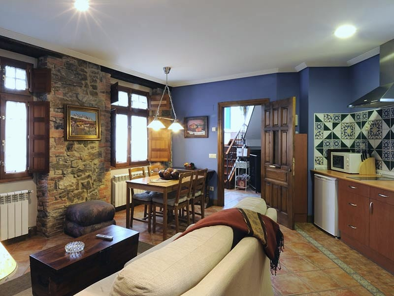

1.ª planta
La Panera
Por el restaurante de los abuelos, La Panera, que tenía el comedor justo en ese espacio.
- Plazas
- 4 a 5 personas por confirmar
- Dormir
- 2 dormitorios dobles
- Baño
- Baño con ducha de hidromasaje
- Lo suyo
- El espacio donde estaba el comedor del restaurante La Panera.